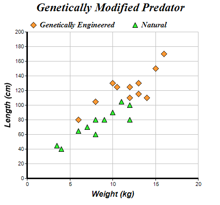

This example demonstrates a scatter chart created using XYChart.addScatterLayer.
ChartDirector 7.1 (C++ Edition)
Scatter Chart
Source Code Listing
#include "chartdir.h"
int main(int argc, char *argv[])
{
// The XY points for the scatter chart
double dataX0[] = {10, 15, 6, 12, 14, 8, 13, 13, 16, 12, 10.5};
const int dataX0_size = (int)(sizeof(dataX0)/sizeof(*dataX0));
double dataY0[] = {130, 150, 80, 110, 110, 105, 130, 115, 170, 125, 125};
const int dataY0_size = (int)(sizeof(dataY0)/sizeof(*dataY0));
double dataX1[] = {6, 12, 4, 3.5, 7, 8, 9, 10, 12, 11, 8};
const int dataX1_size = (int)(sizeof(dataX1)/sizeof(*dataX1));
double dataY1[] = {65, 80, 40, 45, 70, 80, 80, 90, 100, 105, 60};
const int dataY1_size = (int)(sizeof(dataY1)/sizeof(*dataY1));
// Create a XYChart object of size 450 x 420 pixels
XYChart* c = new XYChart(450, 420);
// Set the plotarea at (55, 65) and of size 350 x 300 pixels, with a light grey border
// (0xc0c0c0). Turn on both horizontal and vertical grid lines with light grey color (0xc0c0c0)
c->setPlotArea(55, 65, 350, 300, -1, -1, 0xc0c0c0, 0xc0c0c0, -1);
// Add a legend box at (50, 30) (top of the chart) with horizontal layout. Use 12pt Times Bold
// Italic font. Set the background and border color to Transparent.
c->addLegend(50, 30, false, "Times New Roman Bold Italic", 12)->setBackground(Chart::Transparent
);
// Add a title to the chart using 18pt Times Bold Itatic font.
c->addTitle("Genetically Modified Predator", "Times New Roman Bold Italic", 18);
// Add a title to the y axis using 12pt Arial Bold Italic font
c->yAxis()->setTitle("Length (cm)", "Arial Bold Italic", 12);
// Add a title to the x axis using 12pt Arial Bold Italic font
c->xAxis()->setTitle("Weight (kg)", "Arial Bold Italic", 12);
// Set the axes line width to 3 pixels
c->xAxis()->setWidth(3);
c->yAxis()->setWidth(3);
// Add an orange (0xff9933) scatter chart layer, using 13 pixel diamonds as symbols
c->addScatterLayer(DoubleArray(dataX0, dataX0_size), DoubleArray(dataY0, dataY0_size),
"Genetically Engineered", Chart::DiamondSymbol, 13, 0xff9933);
// Add a green (0x33ff33) scatter chart layer, using 11 pixel triangles as symbols
c->addScatterLayer(DoubleArray(dataX1, dataX1_size), DoubleArray(dataY1, dataY1_size),
"Natural", Chart::TriangleSymbol, 11, 0x33ff33);
// Output the chart
c->makeChart("scatter.png");
//free up resources
delete c;
return 0;
}